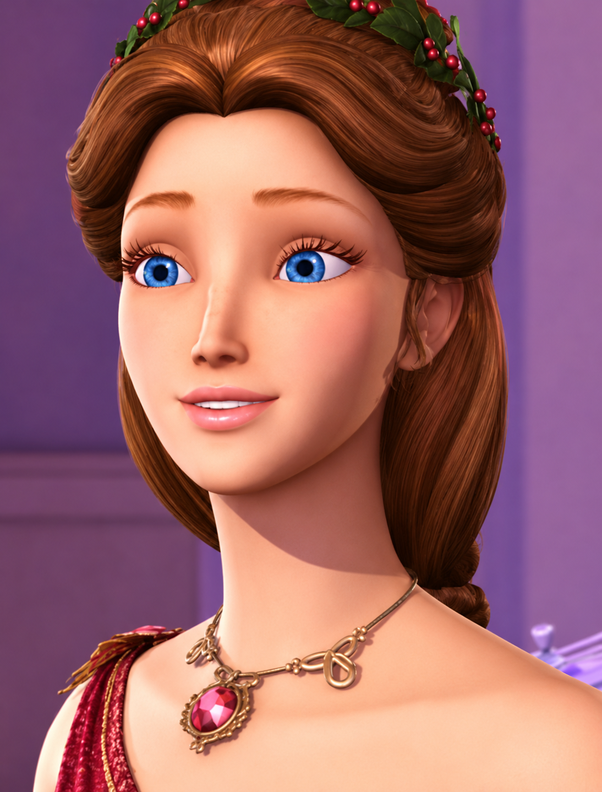

Melody
About
Melody is a young muse and the apprentice of the three Muses of Music. She is gentle, brave, and devoted to the Diamond Castle. She holds the key that protects it.
In the movie
Melody is trapped in a magic mirror until Liana and Alexa free her. She tells them about Lydia's betrayal and guides them to the Diamond Castle. At the end, Dori and Phaedra welcome her as a real muse.
Relationships
- Liana and Alexa: The friends who free her and travel with her
- Dori and Phaedra: The Muses who taught her
- Lydia: Her former teacher who turned against the Muses
Fun facts
- Maryke Hendrikse voices Melody, and Lara Janine does her singing.